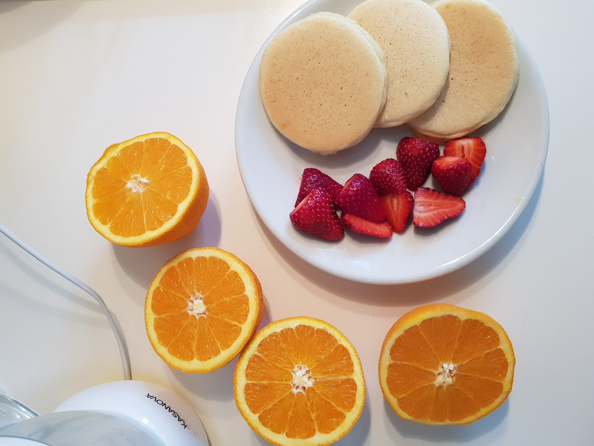

Pancake soffici come una nuvola che renderanno piacevole
anche un lunedì mattina

Tempo di preparazione: 5 minuti
Tempo cottura: 15/20 minuti
Difficoltà: facile
Ingredienti per circa 20 pancake:
- 2 uova
- 80 grammi di zucchero
- 250 grammi di latte
- 20 grammi di olio di semi
- 250 grammi di farina 00
- Una bustina di vanillina
- Una bustina di lievito in polvere per dolci
Procedimento:
- Versare le uova e lo zucchero in una ciotola, sbatterli con una frusta a mano fino ad ottenere un composto liscio e spumoso.
- Aggiungere il latte a filo continuando a mescolare e in seguito l'olio di semi.
- Una volta che tutti i liquidi si saranno ben amalgamati, unire la farina e la vanillina al composto, avendo cura di setacciarle bene al fine di non avere grumi.
- Aggiungere il lievito e continuare a mescolare fino a che l’impasto sarà ben uniforme.
- Dopo aver scaldato una padella antiaderente, versare un cucchiaio di impasto direttamente nella padella, non sarà necessario ungerla con del burro.
Cuocere a fuoco medio/basso per un paio di minuti, appena si vedranno delle bollicine, girare i pancake dall'altro lato e cuocerli per ancora per 2/3 minuti.
- Servire i pancake ancora tiepidi, accompagnandoli con dello sciroppo d'acero oppure con la crema o la marmellata che si preferisce.

Conservazione:
I pancake si conservano fino a 3 giorni in luogo fresco e asciutto oppure metterli in un contenitore e
conservarli in frigo, avendo cura di scaldarli leggermente prima di consumarli.